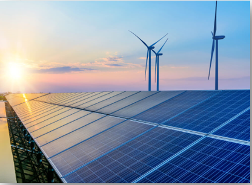
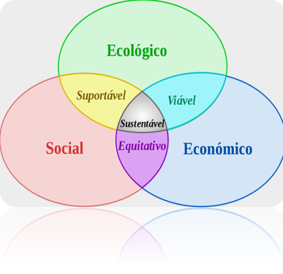

A sustentabilidade possui um papel muito importante não só como fator principal na geração de energia limpa como também em questões sociais, econômicas e ambientais. Sendo assim, além de contribuírem para a diminuição dos impactos ao meio ambiente, as fontes renováveis auxiliam na economia das contas de luz em até 95%, o que permite que localidades de baixa renda tenham acesso à energia elétrica.
Quando pensamos em energia e sustentabilidade, devemos considerar a importância da união desses dois fatores nos dias atuais. Desta forma, a utilização de fontes de energia renováveis é fundamental para que as gerações futuras não sejam afetadas, uma vez que os recursos não se esgotam e estão disponíveis gratuitamente
A importância do desenvolvimento sustentável é bastante simples: se não adotarmos medidas sustentáveis, faltarão recursos naturais no futuro. Precisamos utilizar os recursos de maneira consciente para não afetar as gerações futuras, caso contrário essas enfrentarão escassez de alguns produtos, bem como um aumento de preço em decorrência dessa redução. Atualmente, a maioria dos países (incluindo o Brasil) depende dos combustíveis fósseis, em diferentes porcentagens, para geração de energia. No entanto, esses combustíveis não são renováveis, isto é, utilizam recursos finitos. Em contraste, os muitos tipos de recursos de energia renovável – como a energia eólica e solar – são constantemente reabastecidos e nunca se esgotam. Nesse texto, vamos mostrar a importância da energia renovável.

O conceito de desenvolvimento sustentável remete, dessa maneira, à importância de três princípios para a sua efetivação: os princípios econômicos, ambientais e sociais. Essas ações remetem ainda ao conceito de sustentabilidade, que está ligada à promoção de ações que ofereçam sustentação para o crescimento econômico, a preservação ambiental e a redução da desigualdade social. Desse modo, o desenvolvimento sustentável é composto por um conjunto de princípios que permeiam o desenvolvimento da economia, a partir de ações de cunho ambiental e social. Para tal, percebe-se a importância do desenvolvimento sustentável, que prima pelo crescimento econômico de maneira que não haja prejuízos para as gerações futuras, uma vez que são registrados altos impactos ambientais promovidos pelas atividades produtivas na atualidade.
O desenvolvimento sustentável está ancorado no desenvolvimento econômico da humanidade baseado na conservação dos recursos naturais. Desse modo, o desenvolvimento de maneira sustentável indica que os recursos naturais sejam utilizados de maneira racional, ou seja, sem o seu esgotamento, com vistas à conservação desses recursos para as gerações futuras. Sendo assim, busca-se o progresso econômico da sociedade baseado na importância dos recursos ambientais para as atividades produtivas e, ainda, na sua conservação, em uma clara preocupação com o futuro da humanidade.
O desenvolvimento sustentável possui três grandes princípios, que são:
• Sustentabilidade econômica;
• Sustentabilidade ambiental;
• Sustentabilidade social;
Desse modo, os princípios sustentam o conceito do termo desenvolvimento sustentável, que indica a promoção do crescimento econômico baseada no respeito ao meio ambiente e na melhoria da qualidade de vida da população. A divisão desses princípios permeia a importância de cada uma dessas grandes áreas para o alcance do desenvolvimento sustentável e, ainda, a necessidade de que haja um trabalho conjunto, para que os diferentes princípios sejam desenvolvidos de maneira igualitária, em prol de um objetivo maior, ou seja, o desenvolvimento sustentável.
O conceito de energia sustentável está intrinsecamente conectado ao de desenvolvimento sustentável. Em suma, é a energia capaz de suprir as necessidades da geração atual sem comprometer as necessidades das futuras gerações. Detalhando ainda mais, é todo o tipo de energia que consegue manter um equilíbrio entre produção e consumo. Ela é gerada sem provocar grandes impactos ao meio ambiente e é consumida em quantidade e velocidade nas quais a natureza ou a ação humana conseguem repor.
O desenvolvimento sustentável é caracterizado por ações que não comprometem as gerações futuras, como um sistema de desenvolvimento global, que se preocupa com a quantidade de extração de matéria-prima, impactos ambientais, entre outros. Sendo assim, o exercício da sustentabilidade defende que as necessidades de satisfazer suas vontades atualmente não podem prejudicar seus filhos, netos e bisnetos.

O desenvolvimento que procura satisfazer as necessidades da geração atual, sem comprometer a capacidade das gerações futuras de satisfazerem as suas próprias necessidades, significa possibilitar que as pessoas, agora e no futuro, atinjam um nível satisfatório de desenvolvimento social e econômico e de realização humana e cultural, fazendo, ao mesmo tempo, um uso razoável dos recursos da terra e preservando as espécies e os habitats naturais.
Em face dos problemas causados pelo uso de combustíveis fósseis, o Brasil busca ampliar sua matriz energética investindo no uso de energias renováveis e alternativas que impactem o menos possível no meio ambiente. Entre as alternativas, está o uso crescente da bioenergia e da biomassa. O Brasil, que por sua vez possui um grande potencial para a produção das mesmas, devido a disponibilidade de matérias primas e fontes de recursos, tem atrelado o desenvolvimento de projetos sustentáveis para a produção de biomassa com a bioenergia visando o crescimento de maneira sustentável. Esse crescimento sustentável é uma das formas que o Brasil encontrou para se destacar no cenário mundial. O Brasil também se beneficia do fato de que domina a matriz energética mais renovável do mundo industrializado. No entanto, esse fato não é suficiente para garantir o sucesso de um desenvolvimento sustentável adequado e por existir algumas barreiras que impedem que o Brasil avance mais rapidamente na expansão de seus projetos e no seu desenvolvimento, conforme o presente trabalho procura abordar.